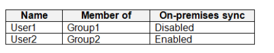
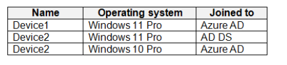
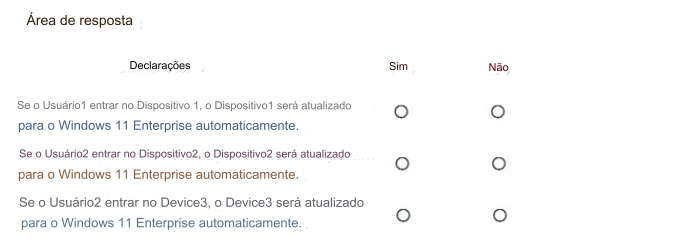

73- PONTO DE ACESSO
Sua rede contém um domínio local dos Serviços de Domínio do Active Directory (AD DS) que sincroniza com um
locatário do Azure AD. O locatário contém os usuários mostrados na tabela a seguir.

Você atribui licenças do Windows 10/11 Enterprise E5 ao Grupo1 e ao Usuário2.
Você implanta os dispositivos mostrados na tabela a seguir.

Para cada uma das afirmações a seguir, selecione Sim se a afirmação for verdadeira. Caso contrário,
selecione Não. NOTA: Cada seleção correta vale um ponto.
